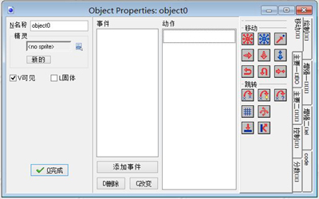

请注意精灵与对象之间的差别。精灵没有任何行为，只是（动画）图像而已。通常对象有一个精灵来代表他们的外观，并且具有行为。如果没有对象，就没有游戏！
同样，你也需要注意对象与实例之间的区别。对象实际上就是实体，比如对象可以是怪物，是汽车等等，对象在游戏中是以实例出现的，一个对象可以产生许多实例（比如对象是“人”，则他在房间里可以表示为黄种人，白种人，黑种人，老人，儿童等等不同的外表与形态）当我们说一个对象时，指的是他的所有的实例，当我们谈论一个实例时，指的是对象在游戏中的一个特定个体。
要在您的游戏中创建一个对象，请从资源菜单中选择创建对象

这个界面有些复杂， 首先窗口的最左边是对象的基本信息，中间是对象的事件列表，右边是对象可以执行的动作。事件和动作我们将在后续的章节进行讲解。
和往常一样，你可以给你的对象赋予一个新名称（也应该给你的对象赋予一个新名称），然后你可以给你的对象选择一个精灵。在精灵选框或旁边的菜单按钮上单击左键，会弹出你现有的精灵，你可以给你的对象选择一个你想用的精灵。如果你并没有可用的精灵，你可以点击新建按钮来创建一个新精灵并改变它。此外，当你选择了一个精灵后，这里会有一个编辑按钮，你可以在这里编辑精灵，这比直接从资源列表的一大堆精灵中选择精灵进行更改要快得多。
在这个下面有两个复选框，可见决定了这个对象的实例是否可见。显然，大多数对象是可见的，但有时非可见的对象也是很有用的。举个例子，你可以用它们来做怪物的路径点， 即使对象不可见，也会照常执行事件，并与其他实例发生碰撞。固体复选框决定了这个对象是否为一个固体对象（比如说墙），与固体对象碰撞和与非固体对象碰撞的机制是不同的，我们强烈建议您只将不移动的对象设定为固体 。